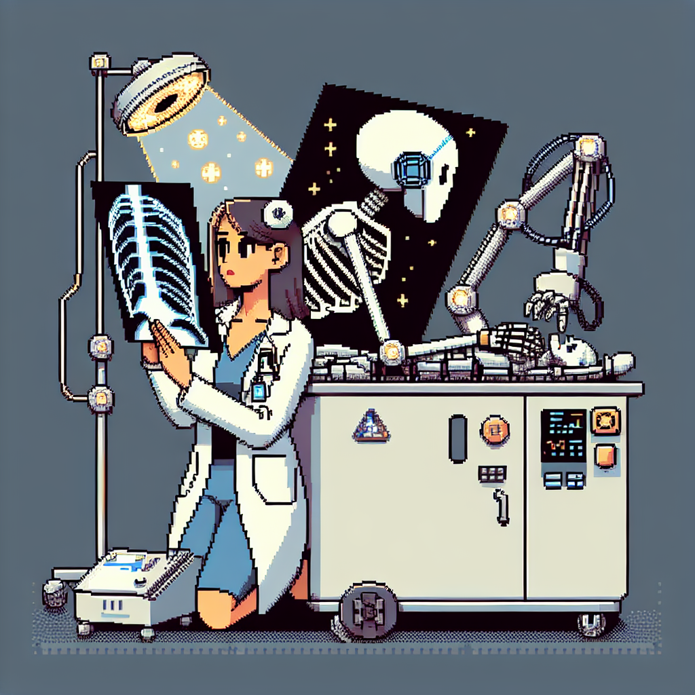

Why AI will soon replace the radiologist
The promise of artificial intelligence (AI) to revolutionize medical imaging is undeniable. The potential for AI to automatically detect and diagnose medical conditions from X-ray and CT scans is a huge step forward in the field of radiology. However, while AI may be able to detect and diagnose certain conditions, it is unlikely that it will ever replace the radiologist.
The reason why AI will never replace the radiologist is because radiology is a complex field that requires a deep understanding of the anatomy, pathology, and physiology of the human body. AI algorithms can only detect and diagnose certain conditions, but they do not possess the same depth of knowledge and experience as a radiologist. A radiologist is able to look at a scan and come to a diagnosis based on their years of experience and expertise, something AI cannot do.
Moreover, AI-based diagnosis is very much dependent on the quality of the data used to train the algorithm. A radiologist is able to detect subtle variations in a scan that may not be present in the dataset used to train the AI. This means that AI-based diagnosis is not always accurate and can lead to incorrect diagnoses.
Finally, AI-based diagnosis is still in its infancy and has many limitations. For instance, AI algorithms cannot yet detect certain conditions that require a high level of expertise and experience, such as brain tumors.
In conclusion, while AI can certainly help in the diagnosis of certain medical conditions, it is unlikely that it will ever replace the radiologist. AI is still limited in its capabilities and requires a deep understanding of the human body that cannot be replaced by algorithms.